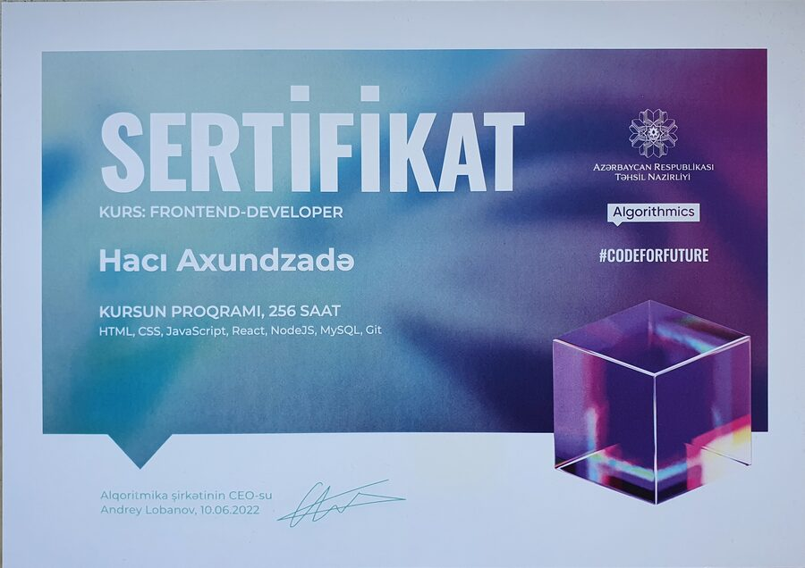
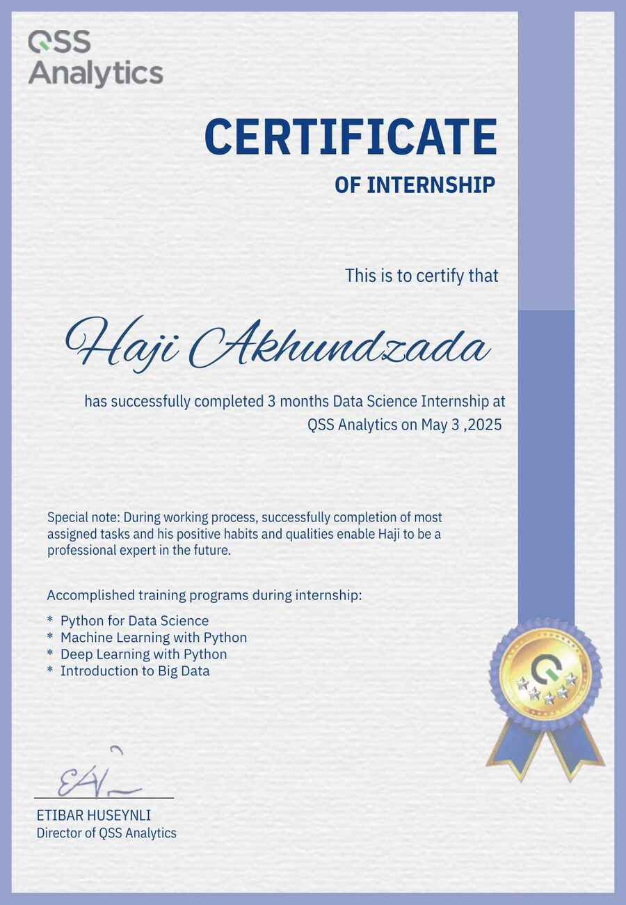
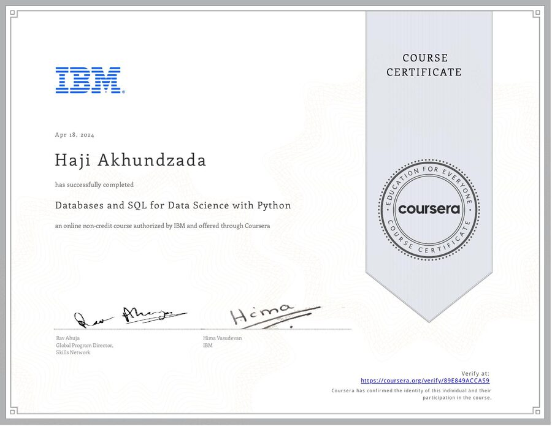
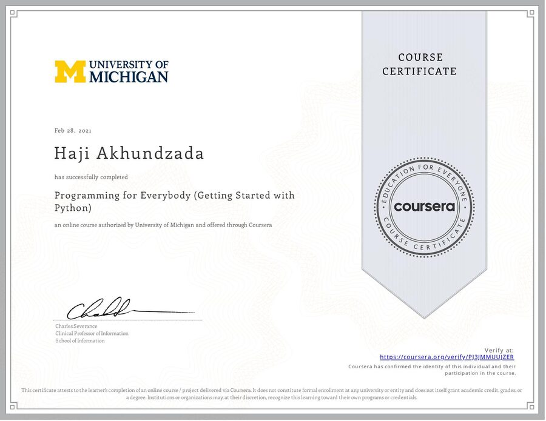

AI-Based Menu Recommendations
PythonGradioscikit-learn
UFAZ-da Data Science and AI magistr proqramının yekun dissertasiya işi — restoran menyusu üçün süni intellekt əsaslı tövsiyə sistemi.
UFAZ-da Data Science and Artificial Intelligence üzrə magistr məzunuyam, tətbiqi maşın öyrənməsi və tövsiyə sistemləri üzərində ixtisaslaşmışam. Python (Pandas, Scikit-learn, Gradio) istifadə edərək kontent-əsaslı tövsiyə sistemi qurmuşam və Data Science təcrübəsi çərçivəsində machine learning, deep learning və big data əsaslarını mənimsəmişəm. SQL əsaslı data idarəetmədən React, Java və Spring Boot ilə veb interfeyslərin hazırlanmasına qədər bütün data pipeline-da rahat işləyirəm.
A data-first profile with an engineering background.
Salam! Mən Hacı — UFAZ-da Data Science and Artificial Intelligence üzrə magistr məzunuyam və tətbiqi maşın öyrənməsi, xüsusilə tövsiyə sistemləri üzərində işləyirəm. Python, Pandas, Scikit-learn və Gradio ilə data hazırlama, model qurma və interaktiv ML interfeysləri hazırlama təcrübəm var.
Magistr layihəmdə 8 kateqoriyaya bölünmüş 167 məhsuldan ibarət restoran menyusu üzərində kontent-əsaslı tövsiyə mühərriki qurmuşam; sistem kalori və allergiya həssaslığını nəzərə alan interaktiv Gradio interfeysi ilə tamamlanıb. MovieLens məlumatları üzərində isə content-based və collaborative filtering yanaşmalarını tətbiq edərək fərdiləşdirilmiş film tövsiyələri yaratmışam. Bununla yanaşı, SQL əsaslı data idarəetməsi və React, Java, Spring Boot ilə veb interfeyslərin hazırlanması üzrə də işləyə bilirəm.
The tools I use to move from raw data to working products.
Hər təcrübə kartına klik edərək rol, məsuliyyət və gördüyüm işlərin daha geniş təsvirini oxuya bilərsən.
Təhsil mərhələlərini də klikləyərək proqram, istiqamət və praktiki işlər haqqında daha ətraflı məlumatı aça bilərsən.
Explore the work instead of just reading about it.
UFAZ-da Data Science and AI magistr proqramının yekun dissertasiya işi — restoran menyusu üçün süni intellekt əsaslı tövsiyə sistemi.

Pygame və OpenGL ilə hazırlanmış interaktiv Günəş Sistemi simulyasiyası — səma cisimlərinin mərkəzi ulduz ətrafında orbital hərəkətini vizuallaşdırır.
MovieLens verilənlər bazası üzərində qurulmuş film tövsiyə sistemi — content-based və collaborative filtering yanaşmaları ilə hazırlanıb.

Azərbaycan Respublikası Təhsil Nazirliyi və Algorithmics tərəfindən təsdiqlənmiş, 256 saatlıq frontend-developer proqramı.

QSS Analytics-də 3 aylıq Data Science təcrübə proqramı — Python, Machine Learning, Deep Learning və Big Data modullarını tamamladım.

IBM tərəfindən hazırlanmış və Coursera vasitəsilə təqdim olunan kurs — verilənlər bazaları və SQL-in Python ilə istifadəsi.

Python proqramlaşdırma dilinin əsaslarına giriş kursu — dəyişənlər, funksiyalar və əsas proqramlaşdırma məntiqi.
Data, machine learning, software or a project idea — the fastest way to reach me is through email or LinkedIn.
Send an email ↗